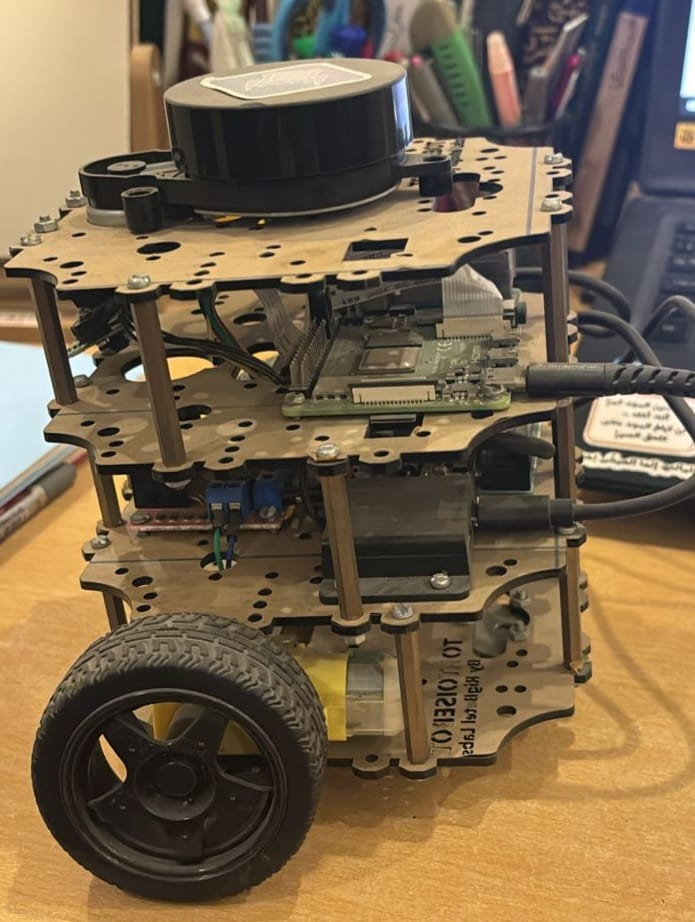
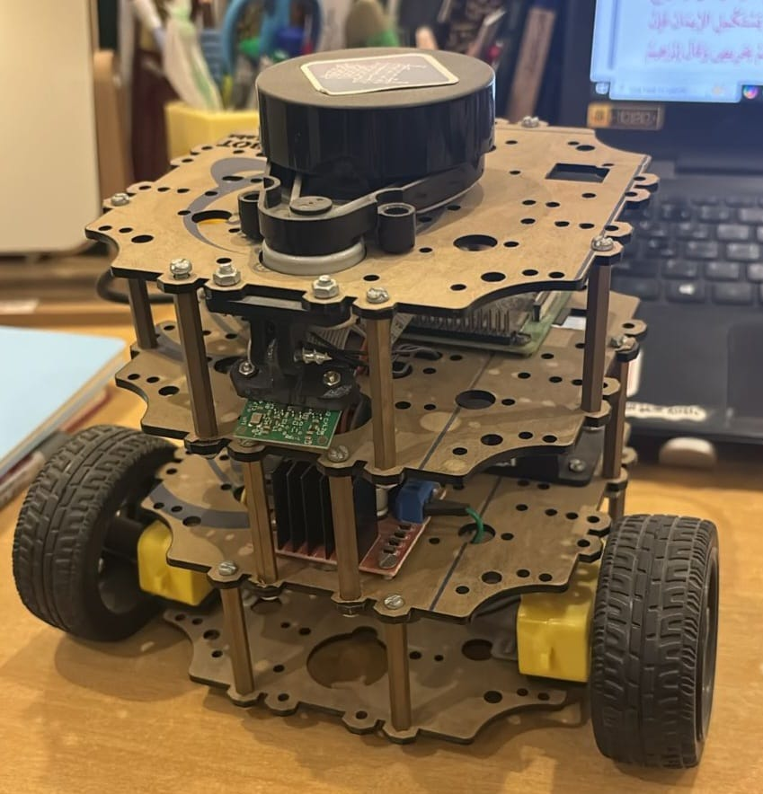

نظرة عامة على المشروع
ركز هذا المشروع المرحلي على التجميع الكامل والإعداد العملي لمنصة TurtleBot3 الروبوتية من مكوناتها المادية الأساسية. وقد سدّ المشروع الفجوة بين المحاكاة والروبوتات الواقعية من خلال العمل مع العتاد الحقيقي والحساسات والأنظمة المدمجة.
نجحت في دمج حِزَم الملاحة لكل من ROS1 وROS2 على جهاز Raspberry Pi، وتنفيذ خوارزميات SLAM بحيث يتمكن الروبوت من رسم خرائط البيئات غير المعروفة والتنقل فيها ذاتياً دون نقاط طريق محددة مسبقاً.
دوري
أنجزت المسار الكامل من العتاد إلى البرمجيات في هذا المشروع، وشمل ذلك:
- تجميع عتاد TurtleBot3 فعلياً من المكونات المنفصلة
- إعداد Raspberry Pi ليكون الحاسوب المدمج على الروبوت
- تثبيت وتهيئة كل من ROS1 (Noetic) وROS2 (Foxy/Humble)
- تنفيذ SLAM لرسم البيئة بشكل ذاتي
- اختبار قدرات الملاحة الذاتية والتحقق من عملها
الميزات الرئيسية والتنفيذ
تجميع العتاد ودمجه
قمت بتجميع منصة TurtleBot3 الكاملة من مكوناتها الميكانيكية والكهربائية والحسية المنفصلة. وشمل ذلك دمج المحركات ووحدات التحكم بالمحركات وحساس LiDAR ووحدة IMU وRaspberry Pi ضمن منصة روبوتية متحركة تعمل فعلياً مع توصيلات صحيحة وإدارة مناسبة للطاقة.
تهيئة Raspberry Pi
قمت بإعداد Raspberry Pi كحاسوب مدمج للروبوت، مع تثبيت أوبونتو وتهيئته لتطبيقات الروبوتات. كما أنشأت الاتصال الشبكي، وثبتّ حزم ROS، وهيأت واجهات العتاد لقراءة بيانات الحساسات والتحكم بالمحركات.
دمج مزدوج لـ ROS1 وROS2
نجحت في دمج حِزَم الملاحة لكل من ROS1 (Noetic) وROS2 (Foxy/Humble) على نفس النظام. ومنحني ذلك خبرة عملية مع منظومتي ROS التقليدية والحديثة، وفهماً للفروق المعمارية واستراتيجيات الانتقال بين الإصدارين.
رسم خرائط ذاتي قائم على SLAM
نفذت خوارزميات SLAM مثل Gmapping وCartographer لتمكين الاستكشاف الذاتي ورسم الخرائط. وتنقل الروبوت في مساحات غير معروفة، وعالج بيانات LiDAR في الوقت الحقيقي، وبنى خرائط إشغال ثنائية الأبعاد دقيقة من دون مسارات محددة مسبقاً أو تحكم يدوي.
التقنيات المستخدمة
صور المشروع


الأثر ومخرجات التعلم
منحني هذا المشروع خبرة عملية قيّمة في سد الفجوة بين المحاكاة والروبوتات الواقعية. فقد فرض العمل مع العتاد الحقيقي تحديات لا تظهر في المحاكاة مثل ضجيج الحساسات ومحدودية العتاد وقيود الأداء اللحظي.
- مهارات عملية في تجميع العتاد ودمجه
- تهيئة الأنظمة المدمجة وإدارتها
- فهم الفروق بين معماريتي ROS1 وROS2
- تنفيذ SLAM في العالم الحقيقي وتصحيح مشكلاته
- التعامل مع بيانات الحساسات الحقيقية والضجيج وقيود العتاد